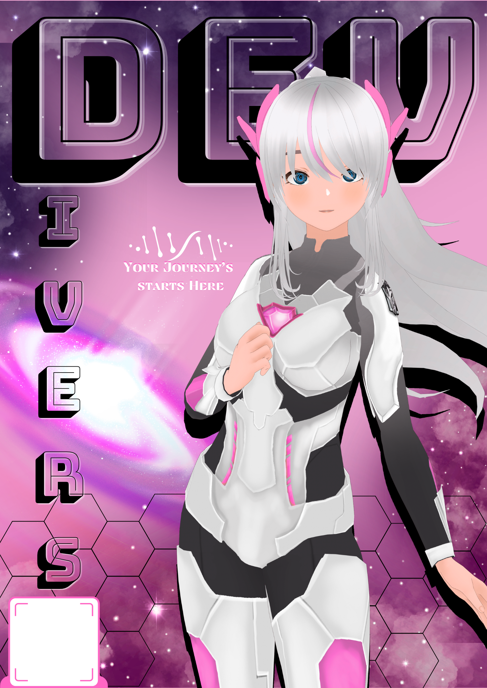
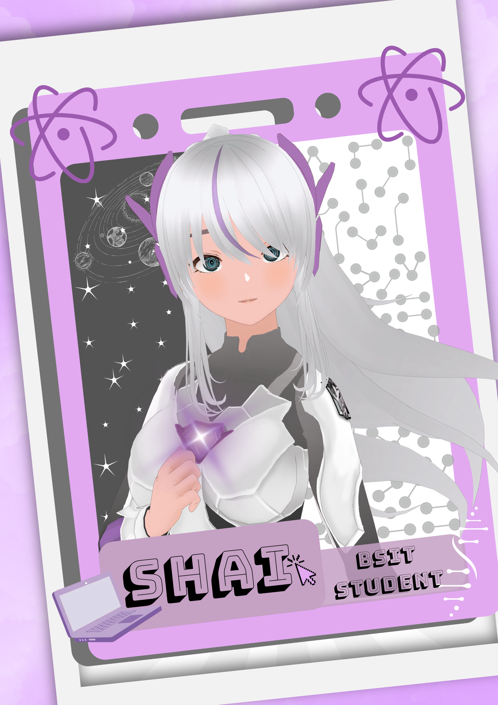

Hello, I'm
ARLEEN SHANE P. GONZALES
BSIT Student & Aspiring Digital Artist
I am a BSIT student with an interest in digital art and creative design. I enjoy exploring ideas through visual creativity and learning new skills that can help me improve my designs. My goal is to develop my creativity and technical skills to create meaningful and visually appealing digital artwork.

About Me
I am a creative and passionate individual who enjoys editing and turning simple ideas into something visually interesting. I like experimenting with different designs and styles to bring my imagination to life. I am always willing to learn new techniques and improve my skills as I explore the world of digital arts.
Personal Information
Full Name: ARLEEN SHANE P. GONZALES
Age: 19
Gender: Female
Status: Single
Height & Weight: 5'3, 53 Kg
Address: San Isidro Z4, Tayabas City
Course: Bachelor of Science in Information Technology
Specialty: Digital Arts
Education
College
School: College of Sciences, Technology and Communication
Course: Bachelor of Science Information Technology
School Address: Poblacion 1, Sariaya Quezon
Year Level: Second Year
Year: Ongoing
Senior High School
School: Buenaventura National High School
Track/Strand: Humanity and Social Sciences
School Adress: Bgry. Potol Tayabas City, Quezon
Year Graduated: 2023-2025
High School
School: Luis Palad Integrated High School
School Adress: Bgry. Ipilan Tayabas City, Quezon
Year Graduated: 2019-2023
Elementary School
School: Pinagbobong Elementary School
School Adress: Brgy. Pinagbobong Tabaco City, Albay
Year Graduated: 2014-2019
Awards and Achievements
This section shows the achievements I have earned through my academic journey and other activities.
- With Honor - Grade 10.
- With Honor - Grade 12 SHS.
- Best in Work Immersion - Senior High School
- Girl Scout Member - Participated in scouting activities that helped develop my discipline, teamwork, and responsibility.
- Majorette - Participated as a majorette from Grade 3 to Grade 6, gaining experience in school performances, coordination, and teamwork..
My Hobbies
Canva Editing
I love editing in Canva and creating different things, even random designs just for fun.
Watching Horror Movies
I enjoy watching horror movies, especially when I want something exciting and entertaining.
Drawing
I enjoy drawing whenever I have free time and creating different kinds of artwork.
My Skills
Basic Programming
I have basic knowledge in programming and enjoy learning how to create simple programs.
Web Development
I can create basic websites using HTML, CSS, and JavaScript.
Canva Editing
I can create and edit different designs and presentations using Canva.
Basic Database
I have learned the basics of creating tables and using SQL for simple database tasks.
Projects Accomplished

Home Icon
A simple home icon featuring a house symbol with a soft pink color and a clean, rounded design. It represents a home or the main page of a website.

Game Front Icon
A simple game-themed front icon designed with a playful style. It uses a game-inspired symbol and lettering to represent gaming and digital entertainment.

Designing
A purple game-style design featuring an anime character, decorative elements, and bold lettering.


Websites
Creating website layouts and designs using Figma and Penpot, focusing on the structure, appearance, and user interface of the website.
More About Me
I believe that learning takes time and effort. As an IT student, I want to continue improving my knowledge, gaining experience, and becoming more confident in my abilities.
My Goal
My goal is to graduate, improve my technical skills, and build useful projects that can help me in my future career.